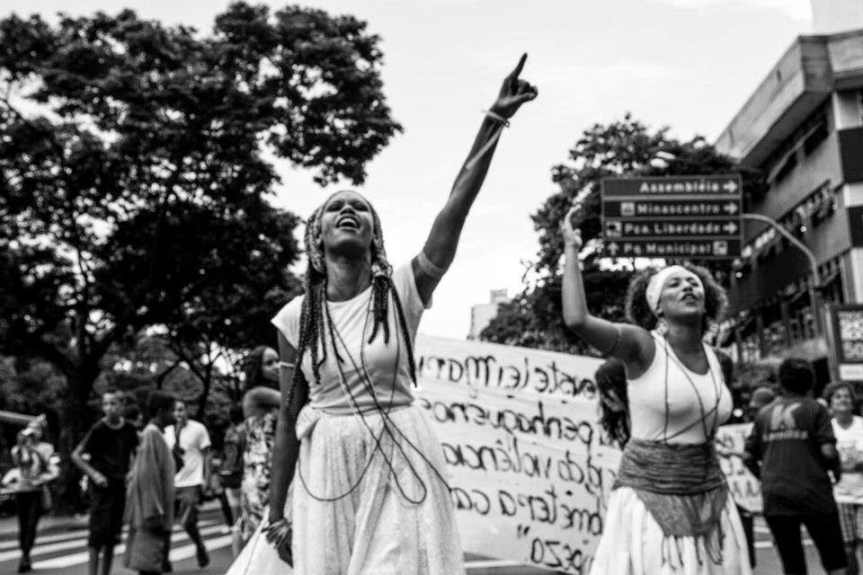

Principal
No Brasil, as lutas pelo reconhecimento e pela cidadania da raca negra tiveram inicio ja no tempo da escravidao, que durou desde o "descobrimento" do pais por Portugal, no ano de 1500, ate o seculo passado com a chamada "abolicao" decretada por nobres, pressionados por condicoes internacionais que dificultavam o trafico de escravos, encarecendo a mao de obra escrava no Brasil. Dentre as lutas mais importantes estao os famosos "quilombos"*, o mais famoso deles chamado Palmares que durou 104 anos durante os quais negros, indios e alguns brancos fizeram uma alianca etnica contra a pratica da escravidao.
O ressurgimento das lutas da raca negra na decada de 70 coincide com o periodo das lutas de libertacao dos povos africanos. Segundo Marcio, tambem tiveram influencia o movimento negro americano ("sound music" e movimento "pop"). Pela via cultural, foi-se retomando o sentido da expressao racial inicialmente nos estados da Bahia, Rio de Janeiro e Sao Paulo.